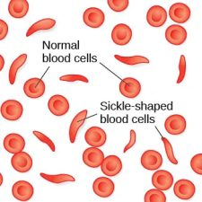
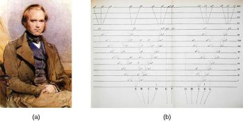

9.1: Introduction
In this chapter, we’ll explore questions such as: Why do two people infected by the same disease have different outcomes: one surviving and one succumbing to the ailment? How are genetic diseases passed through family lines? Are there genetic components to psychological disorders such as depression or schizophrenia?
To explore these questions, let’s start with a specific genetic disorder, sickle-cell anemia, and how it might manifest in two affected sisters (Spielman et al., 2020). Sickle-cell anemia is a genetic condition in which red blood cells, which are normally round, take on a crescent-like shape (Figure 1). The changed shape of these cells affects how they function: sickle-shaped cells can clog blood vessels and block blood flow, leading to high fever, severe pain, swelling, and tissue damage.

Many people with sickle-cell anemia—and the particular genetic mutation that causes it—die at an early age. While the notion of “survival of the fittest” may suggest that people with this disorder have a low survival rate and, therefore, the disorder will become less common, this is not the case. Despite the negative evolutionary effects associated with this genetic mutation, the sickle-cell gene remains relatively common among people of African descent. Why is this? The explanation is illustrated with the following scenario.
Imagine two young women—Luwi and Sena—sisters in rural Zambia, Africa. Luwi carries the gene for sickle-cell anemia; Sena does not carry the gene. Sickle-cell carriers have one copy of the sickle-cell gene but do not have full-blown sickle-cell anemia. They experience symptoms only if they are severely dehydrated or are deprived of oxygen (as in mountain climbing). Carriers are thought to be immune from malaria (an often deadly disease that is widespread in tropical climates) because changes in their blood chemistry and immune functioning prevent the malaria parasite from having its effects (Gong et al., 2013). However, full-blown sickle-cell anemia, with two copies of the sickle-cell gene, does not provide immunity to malaria.
While walking home from school, both sisters are bitten by mosquitoes carrying the malaria parasite. Luwi is protected against malaria because she carries the sickle-cell mutation. Sena, on the other hand, develops malaria and dies just two weeks later. Luwi survives and eventually has children, to whom she may pass on the sickle-cell mutation.
Malaria is rare in the United States, so the sickle-cell gene benefits nobody: the gene manifests primarily in minor health problems for carriers with one copy or a severe full-blown disease with no health benefits for carriers with two copies. However, the situation is quite different in other parts of the world. In parts of Africa where malaria is prevalent, having the sickle-cell mutation does provide health benefits for carriers (protection from malaria).
The story of malaria fits with Charles Darwin’s theory of evolution by natural selection (Figure 2). In simple terms, the theory states that organisms that are better suited to their environment will survive and reproduce, while those that are poorly suited to their environment will die off. In our example, we can see that, as a carrier, Luwi’s mutation is highly adaptive in her African homeland; however, if she resided in the United States (where malaria is rare), her mutation could prove costly—with a high probability of the disease in her descendants and minor health problems of her own.

DIG DEEPER
Two Perspectives on Genetics and Behavior
The interaction of genes and the environment is studied in the fields of evolutionary psychology and behavioral genetics. In both fields, it is understood that genes code for particular traits and contribute to patterns of cognition and behavior. How can we tell these fields apart?
Evolutionary psychology focuses on how universal patterns of behavior and cognitive processes have evolved over time. Therefore, variations in cognition and behavior would make individuals more or less successful in reproducing and passing those genes on to their offspring. Evolutionary psychologists study a variety of psychological phenomena that may have evolved as adaptations, including fear response, food preferences, mate selection, and cooperative behaviors (Confer et al., 2010).
While evolutionary psychologists focus on universal patterns that evolved over millions of years, behavioral geneticists study how individual differences arise, in the present, through the interaction of genes and the environment. When studying human behavior, behavioral geneticists often employ twin and adoption studies to research questions of interest (discussed later in this chapter). Both approaches provide some insight into the relative importance of genes and environment for the expression of a given trait.
LINK TO LEARNING
Watch this interview with evolutionary psychologist David Buss to learn more about how a psychologist approaches evolution and how this approach fits within the social sciences.
Text Attributions
This section contains material adapted from:
Spielman, R. M., Jenkins, W. J., & Lovett, M. D. (2020). 3.1 Human Genetics. In Psychology 2e. OpenStax. Access for free at https://openstax.org/books/psychology-2e/pages/3-1-human-genetics License: CC BY 4.0 DEED.
Media Attributions
- Sickle blood cells © Openstax
- Charles Darwin © Openstax is licensed under a CC BY-NC-SA (Attribution NonCommercial ShareAlike) license